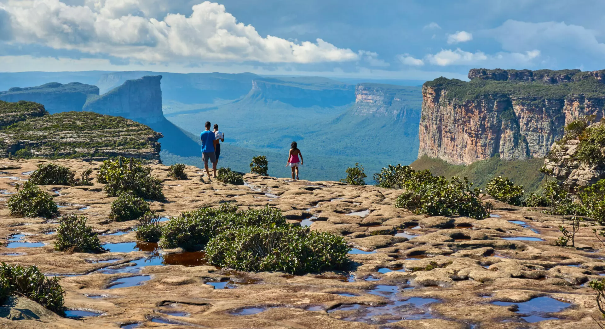
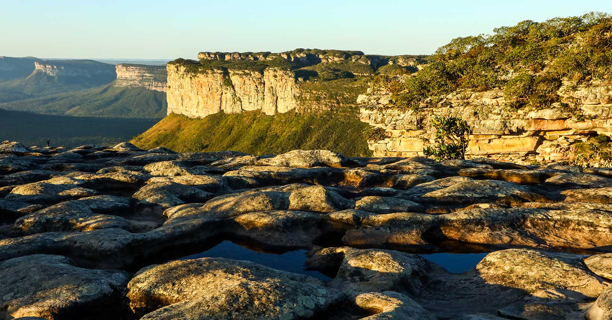
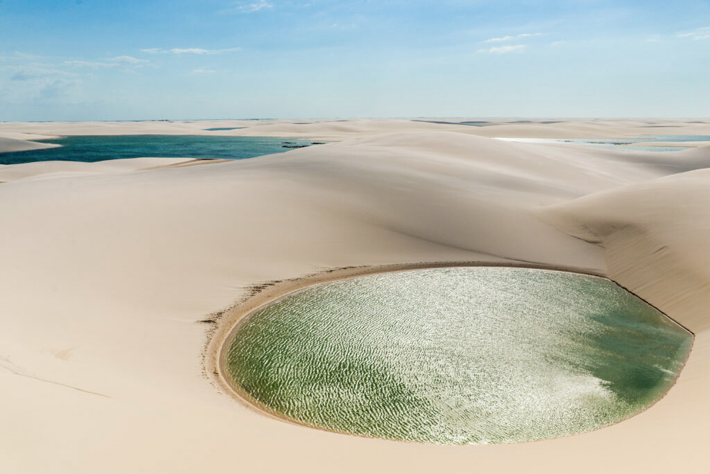
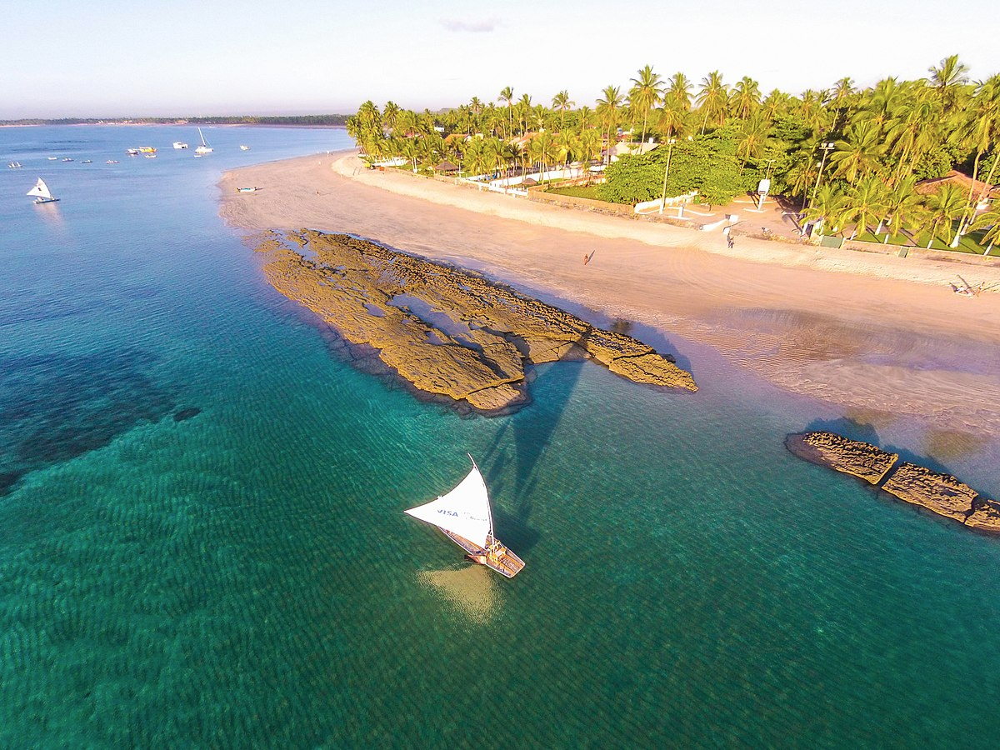

Nordeste
O Nordeste é um convite vibrante ao sol, mar e aventura. Com um litoral que ostenta algumas das praias mais famosas do mundo, a região também surpreende com ecossistemas únicos e formações geológicas impressionantes no seu interior. É um destino de cores intensas, cultura rica e paisagens que encantam a cada olhar, desde as dunas imponentes até os recifes de corais cristalinos.
Chapada Diamantina
No coração da Bahia, a Chapada Diamantina é um santuário ecológico de rara beleza. Seus vastos planaltos rochosos abrigam um labirinto de cânions profundos, grutas misteriosas, rios de águas escuras e cachoeiras espetaculares, como a Cachoeira da Fumaça. Caminhar por suas trilhas é mergulhar em um universo de biodiversidade e vistas panorâmicas que revelam a força e a magia do interior nordestino.


Lençóis Maranhenses
Os Lençóis Maranhenses são uma obra-prima da natureza, uma paisagem que hipnotiza com a vastidão de suas dunas de areia branca esculpidas pelo vento. Entre as dunas, milhares de lagoas de água doce cristalina surgem na estação chuvosa, criando um contraste visual de tirar o fôlego. Nadar nessas piscinas naturais é uma experiência surreal e inesquecível, um verdadeiro oásis no deserto nordestino.


Porto de Galinhas
Um dos paraísos mais famosos de Pernambuco, Porto de Galinhas é mundialmente conhecido por suas piscinas naturais formadas entre os recifes de corais. Com águas mornas e transparentes, é o lugar perfeito para flutuar entre peixinhos coloridos. Suas praias de areia clara e coqueiros completam o cenário idílico, convidando ao relaxamento e à exploração da rica vida marinha.

.png)